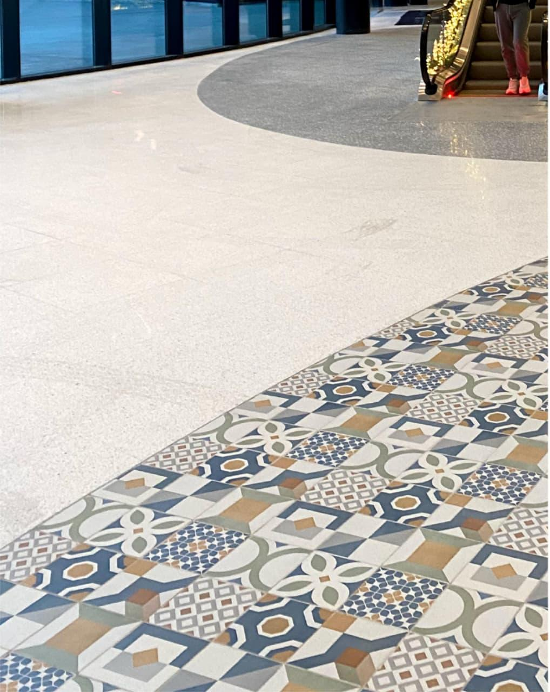

Las imágenes producen un fenómeno social de saturación,
que sumerge al sujeto en un ciclo de consumo, y producción masiva.
Nuestra obra pretende ser una crítica al hartazgo visual contemporáneo,
creando collages digitales, que integra material de producción propia, y archivo.